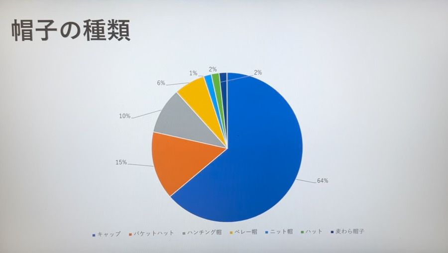
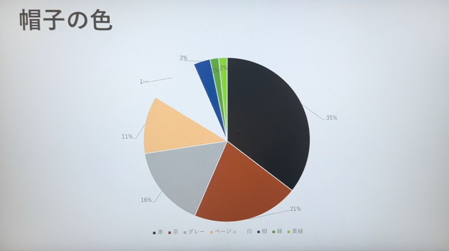
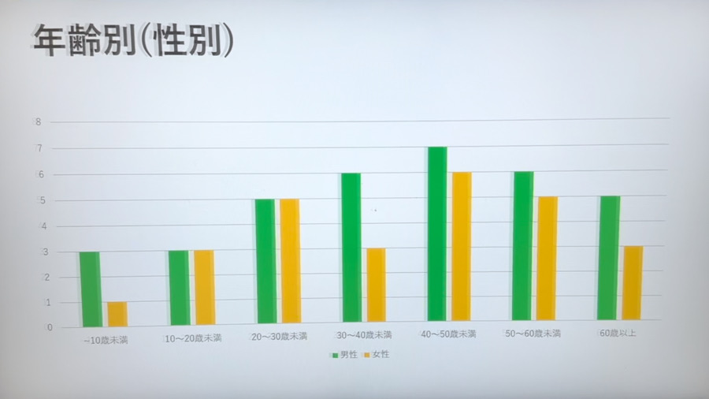

調査概要
- テーマ
➤街中の人はどんな帽子を身につけているだろう
- 観察場所
➤桜木町駅、動く歩道
- 観察日、時間
➤2023/10/17(火)14~15時
調査結果

黒が全体の約1/3となった。圧倒的に黒が多いことが分かる。

種類としては、キャップが全体の64%を占める結果となった。

性別による大きな偏りは感じられないが、年齢による差が見受けられた。
グラフのように40~50歳とみられる方が多いことが分かる。
考察
多かった色に茶が入っていたのは秋という季節が関係しているのだろうか？
また上位にあがった色には年齢、性別、場面を選ばないようなものが多かったように感じた。
この結果にはやはり時間帯、季節、場所が大きくかかわっていると思う。
まとめ・感想
予想としては1位黒2位白となると思っていたので、2位に茶がランクインしていて少し驚いた。
考察で述べたように、結果には時間帯、季節、場所が大きく関わっていると思うので
条件を変えて再度調査すると面白いと思った。